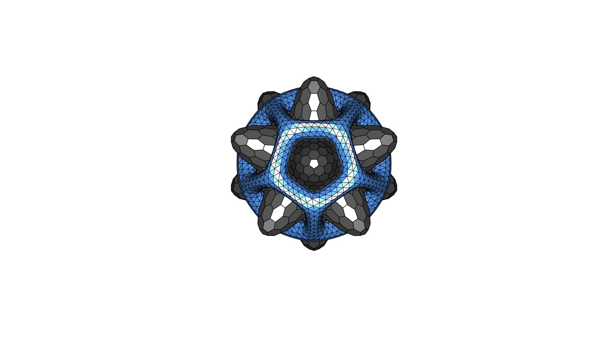

DEMO_JOSS_logo
Below is a demonstration for:
- Building geometry for the logo of the Journal Of Open Source Software (JOSS: http://joss.theoj.org)
Contents
Keywords
- platonic_solid, geoSphere, patch_dual, foamWrap
clear; close all; clc;
Plot settings
patchColorInner=0.25*ones(1,3); patchColorOuter=[64 120 192]/255;
Control parameters
rSphereInner=3; %Sphere radius rSphereOuter=2.075; %Sphere radius numRefine=3; %Number of refinement steps for geoSphere smoothParInner.n=5; smoothParInner.Method='LAP'; %Laplacian smoothing smoothParOuter.n=50; smoothParOuter.Method='HC'; %Humphreys-Classes smoothing controlParFaomWrap.n=3; controlParFaomWrap.dirFlip=1; controlParFaomWrap.foamThickness=[]; %Empty uses default which is mean edgelength based controlParFaomWrap.cParSmooth=smoothParOuter;
Create inner shape
% Create a sphere surface model [Fs,Vs,~]=geoSphere(numRefine,rSphereInner); %Geodesic sphere triangulation % Create an icosahedron surface model [Vi,~]=platonic_solid(4,rSphereInner); %Get icosahedron % Compute distances from the sphere to the icosahedron vertices [D,indMin]=minDist(Vs,Vi); % Adjust distance D=D.^2; %Square distance D=D-min(D(:)); D=D./max(D(:)); %Normalize [0 1] D=D.*rSphereInner; %Multiply by radius [0 rSphere] % Morph shape of sphere using distance data [Ts,Ps,Rs] = cart2sph(Vs(:,1),Vs(:,2),Vs(:,3)); %Get spherical coordinates Rs_n=Rs-2*1/2.5*D; %Create adjusted radius [Vs(:,1),Vs(:,2),Vs(:,3)] = sph2cart(Ts,Ps,Rs_n); %Convert back to Cartesian coordinates [Vs]=patchSmooth(Fs,Vs,[],smoothParInner); %Smoothen the result %Compute the dual of the triangulation [V_inner,F_inner]=patch_dual(Vs,Fs);
Create rotation matrix
A rotation matrix is created to reorient the shapes such that one of the icosahedron vertices points at the camera
n1=vecnormalize(Vi(1,:)); %Position vector 1 normalized to be axis 1 n2=vecnormalize(Vi(2,:)); %Position vector 2 normalized n3=vecnormalize(cross(n1,n2)); %Axis 3 created as orthogonal to both n1 and n2 n2=vecnormalize(cross(n1,n3)); %Form axis 2 as orthogonal to both n1 and n3 Q=[n1; n2; n3]; %Create rotation matrix
Create outer shape
First create an icosahedron, refine it, and compute the structure that wraps the surface.
% Create refine icosahedron surface [Vi,Fi]=platonic_solid(4,rSphereOuter); %Get icosahedron [Fi,Vi,C,indIni]=triPolyDualRefine(Fi,Vi); %Refine the icosahedron % Wrap surface [F_outer,V_outer,C_outer,C_outer_c]=foamWrap(Fi,Vi,C,controlParFaomWrap); % Keep only subset of surface components F_outer=F_outer(C_outer_c~=1,:); [F_outer,V_outer,~]=patchCleanUnused(F_outer,V_outer); [F_outer,V_outer]=mergeVertices(F_outer,V_outer); [F_outer,V_outer]=subtri(F_outer,V_outer,1); %Refine 1 iteration %Smoothen to round the shape [V_outer]=patchSmooth(F_outer,V_outer,[],smoothParOuter);
Rotate geometries
V_inner=V_inner*Q; V_outer=V_outer*Q;
Visualizaing surface models
A slightly messy plot (light is used twice to produce a bright look). Use the export figure widget to export images.
hf=cFigure; hold on; %Plot inner surface for q=1:1:numel(F_inner) hp=patch('Faces',F_inner{q},'Vertices',V_inner,'FaceColor',0.25*ones(1,3),'FaceAlpha',1,'lineWidth',1,'edgeColor','k');%0.25*ones(1,3)); end %Plot outer surface gpatch(F_outer,V_outer,patchColorOuter); axisGeom; axis off; view(0,0); camlight headlight; camlight headlight; lighting flat; drawnow;

GIBBON www.gibboncode.org
Kevin Mattheus Moerman, gibbon.toolbox@gmail.com
GIBBON footer text
License: https://github.com/gibbonCode/GIBBON/blob/master/LICENSE
GIBBON: The Geometry and Image-based Bioengineering add-On. A toolbox for image segmentation, image-based modeling, meshing, and finite element analysis.
Copyright (C) 2006-2022 Kevin Mattheus Moerman and the GIBBON contributors
This program is free software: you can redistribute it and/or modify it under the terms of the GNU General Public License as published by the Free Software Foundation, either version 3 of the License, or (at your option) any later version.
This program is distributed in the hope that it will be useful, but WITHOUT ANY WARRANTY; without even the implied warranty of MERCHANTABILITY or FITNESS FOR A PARTICULAR PURPOSE. See the GNU General Public License for more details.
You should have received a copy of the GNU General Public License along with this program. If not, see http://www.gnu.org/licenses/.